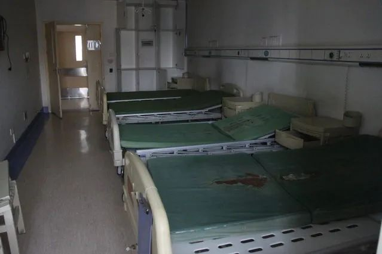
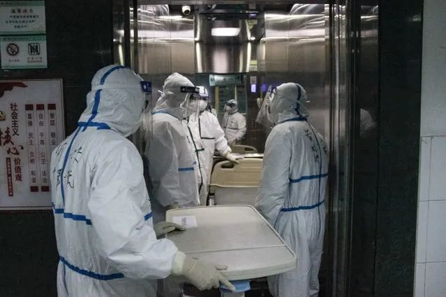
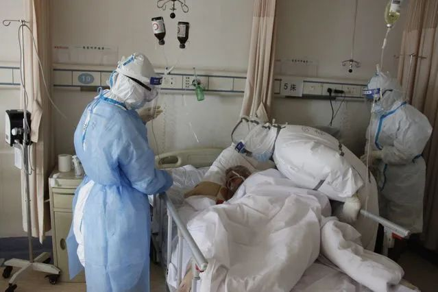
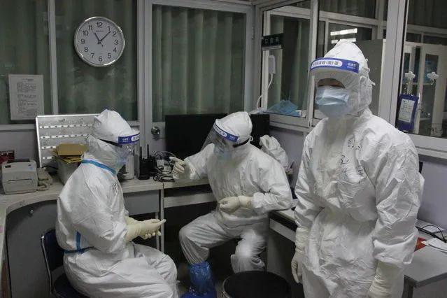
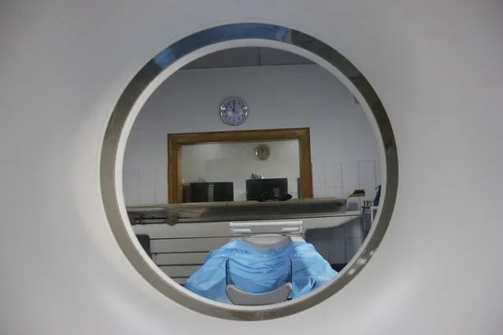

火神山备忘录
原文链接 备份链接 火神山医院内部。李峥苨/拍摄、剪辑 中国青年报 李峥苨 摄影报道 2月21日，武汉市蔡甸区知音湖畔的火神山医院，自接收第一名患者以来已经运转了18天。医院里设有近1000张病床，军队支援湖北医疗队的医护人员在这里为集 …
作者 | 中青报·中青网记者 王嘉兴
编辑 | 曲俊燕

3月17日下午，武汉市红十字会医院15层发热病区，这里的患者已经悉数转院或出院，留下空荡荡的病房。该医院是1月22日武汉市第一批收治发热患者的7家定点医院之一。目前，该医院已被列为普通患者就医医院，从3月18日8时起，预计将暂时关停7天，以进行全面消杀。医院在公告中同时提醒广大病友在此期间就近选择其他医疗机构就诊。中青报·中青网记者 王嘉兴/摄
 3月17日下午，武汉市红十字会医院，医护人员护送一名危重症患者转院。他们中的部分人将随救护车前往定点收治新冠肺炎重症患者的同济医院光谷院区，随时监控患者情况。中青报·中青网记者 王嘉兴/摄
3月17日下午，武汉市红十字会医院，医护人员护送一名危重症患者转院。他们中的部分人将随救护车前往定点收治新冠肺炎重症患者的同济医院光谷院区，随时监控患者情况。中青报·中青网记者 王嘉兴/摄

3月17日下午，武汉市红十字会医院，一名危重症患者转院后，黄晓波和同事梳理病人转院流程上的问题。中青报·中青网记者 王嘉兴/摄

3月17日下午，武汉市红十字会医院呼吸内科一病区，一名上了ECMO（人工膜肺）的患者准备转院，医护人员紧急为其吸痰、调整呼吸和输液管道，本在休息的部分医护人员也从驻地前来帮忙。中青报·中青网记者 王嘉兴/摄

3月17日下午，武汉市红十字会医院，几名医护人员推着空病床演练危重症病人转院流程。危重症病人身上插有约10根管道，需要呼吸机等设备维持生命，医护人员需要确保患者、设备和随行医护人员能同时通过狭窄的楼道、进入电梯和救护车。中青报·中青网记者 王嘉兴/摄

3月17日下午，武汉市红十字会医院呼吸内科一病区，医护人员在研究如何使用氧气瓶给呼吸机供氧。当日，该病区的仅剩的6名危重症患者有5名转院，医护人员需要确保患者在转院途中的安全。3月19日上午，该院最后一名新冠肺炎患者转院。中青报·中青网记者 王嘉兴/摄

3月17日晚，武汉市红十字会医院，呼吸内科二病区，一名医生在巡床后休息。由于防护服不透气，他坐下后，衣服被空气撑满，他笑称自己是“大白”（电影《超能陆战队》角色）。

3月17日晚，武汉市红十字会医院呼吸内科一病区，四川省援汉医疗队临时搭建的简易负压病房。新冠肺炎是一种烈性传染病，为了降低医护人员被感染风险，对患者实施插管治疗时，他们需佩戴正压头套，并在负压病房中操作。武汉市红十字会医院是一所二级医院，条件有限，没有负压病房。中青报·中青网记者 王嘉兴/摄

3月16日上午，武汉市红十字会医院呼吸内科一病区，四川省人民医院重症医学科主任黄晓波查看患者情况。这个病区已经被改造为临时ICU，收治的都是新冠肺炎危重症患者。中青报·中青网记者 王嘉兴/摄

3月16日上午，武汉市红十字会医院呼吸内科二病区，医护人员在交流患者病情。3月14日，这座15层楼的医院开始将患者逐步转出，恢复普通门诊。截至3月16日，医院只剩下4个病区还有住院病人。中青报·中青网记者 王嘉兴/摄

3月16日上午，武汉市红十字会医院CT检查室，一名医生正等待患者前来检查。该医生表示，2月中旬起，CT室的工作强度明显减小，多数时候只需负责约300名住院患者的身体检查。中青报·中青网记者 王嘉兴/摄

3月17日下午，武汉市红十字会医院，呼吸内科一病区，医护人员互相在衣服上画熊猫、太阳。自1月27日进驻武汉市红十字会医院，四川省援汉医疗队的工作人员一直未能轮休，并高强度工作。高峰时，ICU的18张病床一直满床，医护人员上班时难有坐下休息的时间。这个晚上，该病区只剩1人住院，并将在次日转院。中青报·中青网记者 王嘉兴/摄

3月17日下午，武汉市红十字会医院，一名护士在护士站准备注射针剂。中青报·中青网记者 王嘉兴/摄

3月16日上午，武汉市红十字会医院呼吸内科一病区，一名护士将手套吹成气球，撑着氧气管，避免对患者造成压迫。该护士告诉记者，她每吹一个气球，都会在上面写下“早日康复”等字样，表达对患者的美好愿望。中青报·中青网记者 王嘉兴/摄
中国青年报·中国青年网出品
微信编辑 | 陈轶男

觉得好看请点这里
原文链接 备份链接 火神山医院内部。李峥苨/拍摄、剪辑 中国青年报 李峥苨 摄影报道 2月21日，武汉市蔡甸区知音湖畔的火神山医院，自接收第一名患者以来已经运转了18天。医院里设有近1000张病床，军队支援湖北医疗队的医护人员在这里为集 …
原文链接 备份链接 3月4日，武汉市红十字会医院，两名刚刚结束工作的医护人员。中青报 中青网记者 王嘉兴/摄 本文约1672字 预计阅读时间5分钟 作者 | 中青报·中青网记者 王嘉兴 编辑 | 张国 新冠肺炎疫情发展至今，武汉多家医院转 …
原文链接 备份链接 最早认识武汉是从池莉的小说开始的，烟火味、人情味十足。去过武汉，也就理解了她怎么能写出嘈杂的市井，是三镇的布局、是长江的流淌、是九省通衢的历史。如今，方舱里人间烟火正浓。 一位患者眼中的洪山体育馆方舱医院。周莉/ …
原文链接 备份链接 “很多人去世。”袁鸣说，“但他们和我们都尽了最大的努力。” 2月15日上午，刚刚经历了一夜冬日雷雨和大风的武汉大雪纷飞，袁鸣早早进入病房查房。依次穿上蓝色隔离服、白色防护服，戴上手术帽、面屏和护目镜，套上手套和脚 …
原文链接 备份链接 *************▲*************2月19日，武昌医院的发热门诊就诊的人数明显减少。（南方周末记者 王伟凯/图） 全文共5257字，阅读大约需要10分钟。 因为诊断门槛过高，过去二十多天里，武汉 …